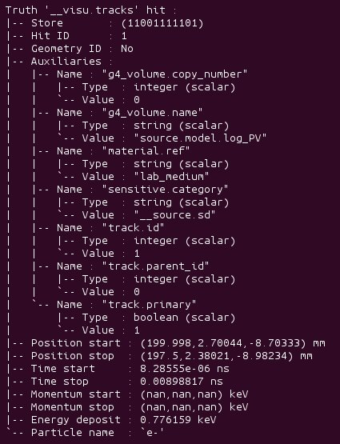

examples/ex00
Description:
This example illustrates how to use the mctools Geant4 engine (from the
mctools_g4library) to simulate monokinetic 1 MeV eletrons emitted from a source and track them in a virtual geometry.It is first shown how to use the
geomtools_inspectorutility to visualize the setup and generate a GDML file usable by Geant4 and browsable by ROOT.The event and vertex generators are also tested in a standalone mode thanks to the
genbb_inspectorandgenvtx_productionprograms respectively.The
g4_productionprogram is used to run a Geant4 based Monte-Carlo simulation and produce an output simulated data file both in interactive mode with Geant4 visualization and non-interactive mode.A sample program is provided to print and display the output simulated data file which contains plain object records of the
mctools::simulated_dataclass.Finally the
dpp_processingprogram is used to run the Geant4 simulation through a data processing pipeline, using the dedicated data processing module classmctools::g4::simulation_module.Source files :
ex00_inspector.handex00_inspector.cc: the simulated data inspector class.
ex00_read_plain_simdata.cxx: the program to browse plain simulated data archive files as generated by theg4_productionprogram.
ex00_read_pipeline_simdata.cxx: the program to browse simulated data archive files as generated by thedpp_processingprogram.Configuration files :
Geometry :
config/geometry/manager.conf: the main configuration file of the geometry manager.Geometry models files:
config/geometry/world.geom: the geometry model that represents the top volume (world).config/geometry/lab.geom: the geometry model that represents the experimental area where the setup is installed and additional geometry volumes.config/geometry/optical_module.geom: the geometry models that represent the detection module (sensitive volume).config/geometry/source.geom: the geometry models that represent the calibration source.config/geometry/categories.lis: the file that defines the list of geometry categories used to assign geometry IDs to the volumes in the hierarchy.Geometry plugins:
config/geometry/materials_plugin.conf: the file that defines the materials plugin. At least one material plugin must be provided to export the geometry hierarchy in a GDML file.
config/geometry/magnetic_field_plugin.conf: the file that defines the electro magnetic fields plugin. One such plugin is provided, it relies on the following files:
config/geometry/magnetic_field_manager.conf: the main configuration file for the electromagnetic field manager.config/geometry/magnetic_fields.conf: the definitions of the magnetic field modelized in this setup.Event generation:
config/event_generator/manager.conf: The main configuration file for the event generator manager (genbb::managerclass).config/event_generator/guns.conf: The definitions of some event generators.config/event_generator/electron_spectrum_0.data: Data file which contains the tabulated energy spectrum used by an electron generator.Vertex generation:
config/vertex_generator/manager.conf: The main configuration file for the vertex generator manager (genvtx::managerclass).config/vertex_generator/vertex_generators.conf: The definitions of some vertex generators.Geant4 simulation:
Plain simulation (
g4_processing):
config/g4_manager.conf: The main configuration file for the Geant4 simulation engine.config/step_hit_processor_factory.conf: The definitions of the step MC hit processors associated to the sensitive detectors in the geometry.config/g4vis.mac: A sample Geant4 visualization macro (for interactive mode only).Simulation through the data processing pipeline (
dpp_processing):
config/pipeline/dlls.conf: the list of shared libraries to be dynamically loaded.config/pipeline/module_manager.conf: the main configuration file of the data processing module manager embeded in thedpp_processingprogram.config/pipeline/service_manager.conf: the main configuration of the service manager embeded in thedpp_processingprogram and used by the module manager.config/pipeline/services.conf: the definitions of the services used by the data processing modules. Here we define the Geometry service which wraps the geometry manager initialized from theconfig/geometry/manager.conffile (see above).config/pipeline/modules.conf: the definitions of the data processing modules used along the pipeline Here we use only one simulation module which wraps the Geant4 simulation manager initialized from theconfig/pipeline/g4_manager.conffile (see below).config/pipeline/g4_manager.conf: The main configuration file for the Geant4 simulation manager used through the pipeline.Built objects :
lib/libmctools_ex00.so: the dedicated shared library for this example.ex00_read_plain_simdata: the executable linked against themctools_ex00library and other Bayeux libraries (mctools_g4,datatools_bio,geomtools_bioandmctools_bio). It enables the reading of simulated data objects generated by theg4_productionprogram, print them and displays Gnuplot based 3D view.ex00_read_pipeline_simdata: the executable linked against themctools_ex00library and other Bayeux libraries (mctools_g4,datatools_bio,geomtools_bioandmctools_bio). It enables the reading of simulated data objects generated by thedpp_processingprogram (data processing pipeline with an embedded Geant4 simulation processing module), print them and displays Gnuplot based 3D view.Build method: CMake.
mctools library.Make a copy of the example directory:
shell> cp -a [mctools install base directory]/share/mctools/examples/ex00 /tmp/ex00
shell> cd /tmp/ex00Build and install the example program:
shell> mkdir __build
shell> cd __build
shell> cmake \
-DCMAKE_INSTALL_PREFIX=.. \
-Dmctools_DIR=$(mctools-config --prefix) \
..
shell> make
shell> make install
shell> cd ..Standalone Geometry:
a. Run the geomtools_inspector to check the virtual geometry:
shell> geomtools_inspector \
--load-dll emfield \
--manager-config config/geometry/manager.conf \
--with-visu --visu-view-3d
geomtools> help
geomtools> display -3d world
geomtools> display [1000:0]
geomtools> display [2020:0.0]geomtools> quit
Note: here we load the
emfieldlibrary because the geometry setup depends on a plugin dedicated to the modelization of electromagnetic fields provided by theemfieldlibrary.It displays views of the setup using the
geomtoolsGnuplot viewer.
ROOT display of the setup via the mctools_ex00-1.0.gdml GDML file
shell> root
root [0] TGeoManager * geo = new TGeoManager("geo","mctools examples/ex00 virtual setup");
root [1] TGeoManager * g2 = geo->Import("mctools_ex00-1.0.gdml");
root [2] g2->SetVisOption(0);
root [3] g2->SetVisLevel(100);
root [4] g2->GetMasterVolume()->Draw("");
root [5] .qIt displays a 3D view of the setup using the ROOT visualization tool.
Standalone event generation:
Show the list of available generators:
shell> genbb_inspector \ --configuration "config/event_generator/manager.conf" \ --action "list" List of particle generators: : |-- electron_1MeV : genbb::single_particle_generator (not initialized) |-- electron_1MeV_cone : genbb::single_particle_generator (not initialized) |-- electron_1MeV_gaussian_100keV : genbb::single_particle_generator (not initialized) |-- electron_2MeV : genbb::single_particle_generator (not initialized) |-- electron_3MeV : genbb::single_particle_generator (not initialized) |-- electron_50-2000keV_flat : genbb::single_particle_generator (not initialized) `-- electron_pdf : genbb::single_particle_generator (not initialized)Shoot some primary events from one event generator:
shell> genbb_inspector \ --configuration "config/event_generator/manager.conf" \ --action "shoot" \ --generator "electron_1MeV_gaussian_100keV" \ --prng-seed 314159 \ --number-of-events 10000 \ --output-file "histos_electron_1MeV_gaussian_100keV.root"Display histograms associated to the event kinematics:
shell> root histos_electron_1MeV_gaussian_100keV.root root [1] TBrowser b; // then use the GUI to display the histograms root [2] .qIt displays some histograms related to the kinematics of the 2MeV electrons.
Standalone vertex generation:
Show the list of available generators:
shell> genvtx_production \ --geometry-manager "config/geometry/manager.conf" \ --vertex-generator-manager "config/vertex_generator/manager.conf" \ --list List of vertex generators : |-- lab_all_walls.vg : Vertex generation from the surface of the experimental hall |-- lab_roof.vg : Vertex generation from the surface of the experimental hall's roof |-- scin_bulk.vg : Vertex generation from the bulk of the scintillator blocks |-- scin_bulk_deep.vg : Vertex generation from the bulk of the scintillator blocks |-- scin_surface.vg : Vertex generation from the surface of the scintillator blocks |-- scin_wrapping_all_bulk.vg : Vertex generation from the bulk of scintillator block wrapping films (all sides) |-- scin_wrapping_front_back_bulk.vg : Vertex generation from the bulk of scintillator block wrapping films (front and back sides) |-- scin_wrapping_left_right_bulk.vg : Vertex generation from the bulk of scintillator blocks wrapping films (left and right sides) |-- scin_wrapping_top_bulk.vg : Vertex generation from the bulk of scintillator block wrapping film (only top side) |-- source_bulk.vg (current) : Vertex generation from the source bulk |-- source_support_bulk.vg : Vertex generation from the source bulk `-- source_surface.vg : Vertex generation from the source bulkShoot some random vertex generators and visualize them:
shell> genvtx_production \ --load-dll emfield \ --geometry-manager "config/geometry/manager.conf" \ --vertex-generator-manager "config/vertex_generator/manager.conf" \ --shoot \ --number-of-vertices 400 \ --prng-seed 314159 \ --vertex-generator "source_bulk.vg" \ --output-file "mctools_ex00_vertices.txt" \ --visu --tinyIt displays a 3D view of the setup with the positions of the generated vertexes from the bulk of the source film.
Another random vertex generators:
shell> genvtx_production \ --load-dll emfield \ --geometry-manager "config/geometry/manager.conf" \ --vertex-generator-manager "config/vertex_generator/manager.conf" \ --shoot \ --number-of-vertices 2000 \ --prng-seed 314159 \ --vertex-generator "scin_wrapping_all_bulk.vg" \ --output-file "mctools_ex00_vertices2.txt" \ --visu --tiny
Geant4 simulation:
Run the simulation through a Geant4 interactive session with visualization:
shell> g4_production \ --logging-priority "warning" \ --number-of-events-modulo 1 \ --interactive \ --g4-visu \ --config "config/g4_manager.conf" \ --vertex-generator-name "source_bulk.vg" \ --vertex-generator-seed 0 \ --event-generator-name "electron_1MeV_cone" \ --event-generator-seed 0 \ --shpf-seed 0 \ --g4-manager-seed 0 \ --output-prng-seeds-file "prng_seeds.save" \ --output-prng-states-file "prng_states.save" \ --output-data-file "mctools_ex00_electron_1MeV_source_bulk.xml" \ --g4-macro "config/g4vis.mac"From the Geant4 interactive session:
Idle> /vis/viewer/set/viewpointThetaPhi -60 45 Idle> /run/beamOn 10 Idle> exitIt displays the virtual geometry setup using the Geant4 visualization driver.
Then browse the output plain simulated data file
shell> ls -l mctools_ex00_electron_1MeV_source_bulk.xml shell> export LD_LIBRARY_PATH=./lib:${LD_LIBRARY_PATH} shell> ./ex00_read_plain_simdata \ --load-dll emfield \ --logging-priority "notice" \ --interactive \ --with-visualization \ --input-file "mctools_ex00_electron_1MeV_source_bulk.xml"
Run the simulation in non-interactive mode:
shell> g4_production \ --logging-priority "warning" \ --number-of-events 100 \ --number-of-events-modulo 0 \ --batch \ --config "config/g4_manager.conf" \ --vertex-generator-name "source_bulk.vg" \ --vertex-generator-seed 0 \ --event-generator-name "electron_1MeV" \ --event-generator-seed 0 \ --shpf-seed 0 \ --g4-manager-seed 0 \ --output-prng-seeds-file "prng_seeds.save" \ --output-prng-states-file "prng_states.save" \ --output-data-file "mctools_ex00_electron_1MeV_source_bulk.data.gz"Then browse the output plain simulated data file
shell> ls -l mctools_ex00_electron_1MeV_source_bulk.data.gz shell> ./ex00_read_plain_simdata \ --load-dll emfield \ --logging-priority "notice" \ --interactive \ --with-visualization \ --input-file "mctools_ex00_electron_1MeV_source_bulk.data.gz"
Run the geant4 simulation through the data processing pipeline:
shell> dpp_processing \ --logging-priority "notice" \ --dlls-config "config/pipeline/dlls.conf" \ --module-manager-config "config/pipeline/module_manager.conf" \ --max-records 1000 \ --modulo 100 \ --module "electron_1MeV_cone@source_bulk" \ --output-file "mctools_ex00_electron_1MeV@source_bulk.dpp.xml"The output data file use the Boost XML archive format and stores the simulated data within
datatools::thingsobject records:shell> ls -l mctools_ex00_electron_1MeV_cone@source_bulk.dpp.xml shell> ./ex00_read_pipeline_simdata \ --load-dll emfield \ --logging-priority "notice" \ --interactive \ --with-visualization \ --input-file "mctools_ex00_electron_1MeV_cone@source_bulk.dpp.xml"
Clean:
shell> rm mctools_ex00_electron_1MeV_cone@source_bulk.dpp.xml
shell> rm prng_seeds.save
shell> rm prng_seeds.save.~backup~
shell> rm mctools_ex00_electron_1MeV_source_bulk.data.gz
shell> rm mctools_ex00_electron_1MeV_source_bulk.xml
shell> rm mctools_ex00_vertices2.txt
shell> rm mctools_ex00_vertices.txt
shell> rm histos_electron_1MeV_gaussian_100keV.root
shell> rm ex00_read_plain_simdata
shell> rm mctools_ex00-1.0.gdml
shell> rm geomtools_inspector.C
shell> rm -fr lib/
shell> rm -fr __build/